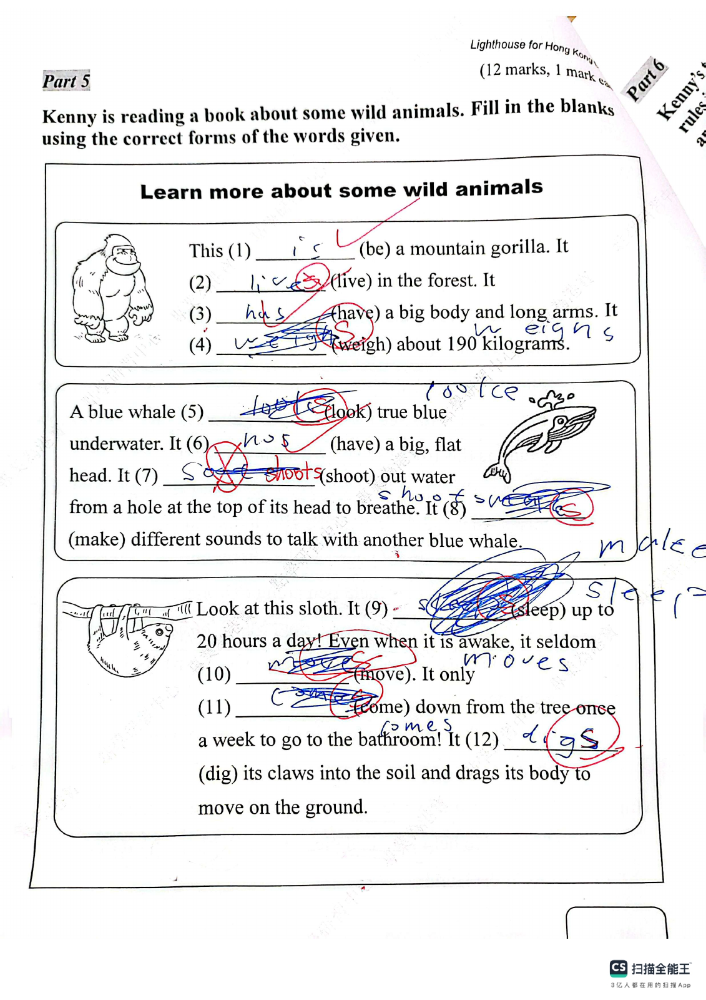
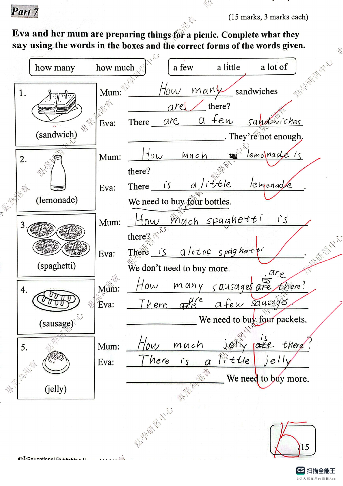

Answer: 20002 < 20020 < 20200 < 22000
已掌握
| # | 单词/词组 | 中文意思 | 例句/说明 | 已掌握 |
|---|---|---|---|---|
| noun 名词 | ||||
| 1 | library | 图书馆 | I read books in the library. | |
| 2 | Wednesday | 周三 | My piano lesson is on Wednesday. | |
| 3 | activity | 活动 | This activity is fun. | |
| 4 | breakfast | 早餐 | I eat breakfast at seven. | |
| 5 | poem | 诗歌 | Read the poem. | |
| 6 | science | 科学 | We learn about plants in science class. | |
| verb 动词 | ||||
| 7 | spend | 花费 | I spend one hour reading. | |
| 8 | locate | 定位 | We can locate the place on the map. | |
| 9 | choose | 选择 | I choose a book. | |
| 10 | find | 找到 | I cannot find my pencil. | |
| preposition 介词 | ||||
| 11 | above | 在……之上 | The clock is above the board. | |
| phrase 短语 | ||||
| 12 | do sums | 数学计算 | We do sums in math class. | |
| 13 | Christmas Eve | 平安夜 | We decorate the tree on Christmas Eve. | |
| adjective 形容词 | ||||
| 14 | quiet | 安静的 | Please be quiet. | |
| 15 | bored | 感到无聊的 | I feel bored on rainy days. | |
| 16 | thirsty | 口渴的 | I am thirsty after running. | |
| 17 | brave | 勇敢的 | The brave boy helps others. | |
| 18 | tidy | 爱干净的 | My brother is tidy and always puts his toys away. | |
| 19 | same | 相同的 | We are in the same class. | |
| pronoun 代词 | ||||
| 20 | they | 他们 | They are my friends. | |
| # | 单词/词组 | 中文意思 | 例句/说明 | 已掌握 |
|---|---|---|---|---|
| adjective 形容词 | ||||
| 1 | fantastic | 超棒的 | The show was fantastic. | |
| 2 | surprised | 惊讶的 | My parents were surprised. | |
| 3 | joyful | 快乐的 | What a joyful day! | |
| noun 名词 | ||||
| 4 | invitation | 邀请 | I got an invitation to a party. | |
| 5 | worm | 虫子；蚯蚓 | The bird catches a worm. | |
| 6 | Carnival | 嘉年华 | We will go to the Carnival on Sunday. | |
| 7 | adventure | 奇遇 | The story is a fun adventure. | |
| 8 | prepositions | 介词 | We are learning prepositions today. | |
| 9 | giraffe | 长颈鹿 | A giraffe has a long neck. | |
| 10 | tutor | 家庭教师 | My tutor helps me study. | |
| 11 | teenager | 青少年 | My brother is a teenager. He is fifteen. | |
| 12 | cycling | 骑自行车 | I like cycling at weekends. | |
| 13 | cola | 可乐 | I'd like three cans of cola, please. | |
| 14 | waitress | 女服务员 | She's a waitress. | |
| 15 | pet | 宠物 | Let me tell you about my new pet, Benny. | |
| 16 | carton | 纸盒；纸箱 | We bought a carton of milk. | |
| 17 | biscuit | 饼干 | Would you like a biscuit with your milk? | |
| noun phrase 名词短语 | ||||
| 18 | a packet of French fries | 一包薯条 | I'd like a packet of French fries. | |
| 19 | General Studies | 常识科 | Some pupils like General Studies. | |
| 20 | bottle of water | 一瓶水 | Please bring a bottle of water for the picnic. | |
| verb 动词 | ||||
| 21 | shout | 喊 | Please do not shout in the library. | |
| 22 | exchange | 交换 | Students exchange presents with their classmates in their classrooms. | |
| 23 | join | 参加，加入 | I would like to join the school choir. | |
| preposition 介词 | ||||
| 24 | on | 在（某天/某日） | It's on Saturday. | |
| 25 | between | 在……之间 | His classroom is between Classroom 3A and Classroom 3C. | |
| phrase 短语 | ||||
| 26 | after-school class | 补习班 | I go to an after-school class on Mondays. | |
| 27 | reading comprehension | 阅读理解 | We practise reading comprehension at school. | |
| verb phrase 动词短语 | ||||
| 28 | playing board games | 玩桌面游戏 | We like playing board games. | |
| adverb 副词 | ||||
| 29 | always | 总是 | We always turn off the lights when we leave a room. | |
| question phrase 疑问短语 | ||||
| 30 | how much | 多少（用于不可数名词） | How much milk is there in the fridge? | |
| # | 单词/词组 | 中文意思 | 例句/说明 | 已掌握 |
|---|---|---|---|---|
| time/date 时间日期 | ||||
| 1 | May | 五月 | May is the fifth month. | |
| 2 | July | 七月 | July is the seventh month. | |
| 3 | August | 八月 | August is the eighth month. | |
| time unit 时间单位 | ||||
| 4 | week | 周 | A week has 7 days. | |
| directions 方向 | ||||
| 5 | north | 北 | North is a direction. | |
| numbers 数字 | ||||
| 6 | three | 3 | Three is 3. | |
| 7 | five | 5 | Five is 5. | |
| 8 | thirty | 30 | Thirty is 30. | |
| 9 | fifty | 50 | Fifty is 50. | |
| 10 | sixty | 60 | Sixty is 60. | |
| 11 | thousand | 千 | One thousand is 1000. | |
| solid shape 立体图形 | ||||
| 12 | quadrilateral prism | 四棱柱 | A quadrilateral prism has quadrilateral faces. | |
| 13 | hexagonal prism | 六棱柱 | A hexagonal prism has hexagonal faces. | |
| 14 | sphere | 球 | A sphere is round. | |
| plane shape 平面图形 | ||||
| 15 | square | 正方形 | A square has four equal sides. | |
| # | 单词/词组 | 中文意思 | 例句/说明 | 已掌握 |
|---|---|---|---|---|
| operations 运算 | ||||
| 1 | subtraction | 减法 | Subtraction means taking away. | |
| 2 | altogether | 总共；合计 | How many are there altogether? | |
| geometry 几何 | ||||
| 3 | parallel | 平行 | Parallel lines never meet. | |
| 4 | curve | 曲线 | Draw a curve. | |
| 5 | adjacent side | 邻边 | These are adjacent sides. | |
| 6 | identical | 完全相同的 | These two triangles are identical in shape and size. | |
| 7 | dotted line | 虚线（点线） | Draw a dotted line between the two points. | |
| directions 方向 | ||||
| 8 | direction | 方向 | Direction tells us where to go. | |
| question word 题目词 | ||||
| 9 | calculate | 计算 | Calculate the answer. | |
| comparison 比较 | ||||
| 10 | less | 更少的；小于 | 8 is less than 10. | |
| 11 | fewer | 更少 | There are fewer apples in this box. | |
| time/date 时间日期 | ||||
| 12 | hour hand | 时针 | At three o'clock, the hour hand points to 3. | |
| 13 | small division | 小格（钟面上的一分钟刻度） | The minute hand moves one small division in one minute. | |
| 14 | second hand | 秒针 | The second hand goes around the clock once in one minute. | |
| position 位置 | ||||
| 15 | below | 下面 | The box is below the table. | |
| 16 | above | 上面 | The clock is above the board. | |
| operations calculation 运算 | ||||
| 17 | mixed operations | 混合运算 | Mixed operations use more than one operation. | |
| 18 | dividend | 被除数 | The dividend is divided by the divisor. | |
| 19 | horizontal form | 横式形式 | Write it in horizontal form. | |
| 20 | column form | 竖式形式 | Write it in column form. | |
| teacher math vocabulary 老师数学词汇 | ||||
| 21 | stop | 停 | Stop counting when you reach twenty. | |
| currency money 货币 | ||||
| 22 | dollar | 元 | One dollar has 100 cents. | |
| 23 | exchange | 兑换（货币） | We exchange money at the counter. | |
| 24 | note | 纸币 | This is a five-dollar note. | |
| measurement 测量 | ||||
| 25 | gram | 克 | One gram is one thousandth of a kilogram. | |
| 26 | kilogram | 千克 | One kilogram is 1,000 grams. | |
| position order 位置和顺序 | ||||
| 27 | following | 下面的 | Answer the following questions. | |
| directions tool 方向工具 | ||||
| 28 | compass | 指南针 | A compass shows directions. | |
| 句型结构 | ||||
| 29 | ... is to the north of ... | ......位于......的北侧。 | The playground is to the north of the hall. | |
| plane shape 平面图形 | ||||
| 30 | trapezium | 梯形（只有一组对边平行的四边形） | A trapezium has exactly one pair of parallel sides. | |

